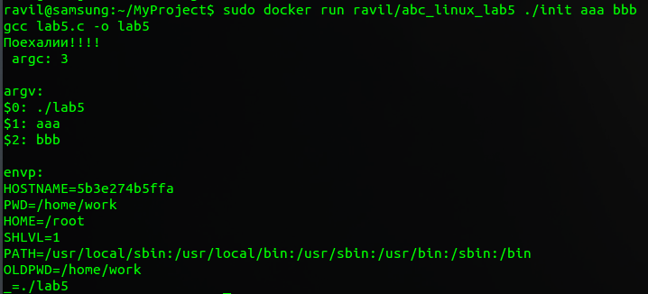

Лабораторная-работа-2¶
Цель работы¶
- Изучение системных вызовов для работы с файлами и переменными окружения.
- Приобретение навыков написания и трансляции системного ПО на языке C.
- Изучение утилиты make и ее использование для трансляции программ на языке C.
- Использование удаленных серверов для трансляции приложений.
Выполнение работы¶
В работе была исследована возможность использования контейнеров Docker для сборки и запуска программ.
Заранее были подготовлены (и откорректированы) исходные файлы программы ссылка.
Для выполнения работы был написан Dockerfile. и bash скрипт (init.sh.).
Из Dockerfile видно, что:
- На этапе построения контейнера:
- Исходные файлы программы помещаются в директорию /src/ внутри контейнера;
- Скрипт помещается в корневую директорию внутри контейнера;
- После запуска контейнера:
- Происходит выполнение компиляции программы;
- Также при зыпуске контенера можно указать bash скрипт и передать аргументы
Рекомендуемая команда для запуска контейнера:
docker run ravil/abc_linux_lab5 ./init aaa bbb
Результат выполнеия команды
{kind=link}
Выводы¶
- благодаря технологии контейнеров имеется возможность запуска процессов в изолированном окружении абсолютно под разными операционными системами.
- Переменные среды контейнера не связаны с переменными среды хост-системы.